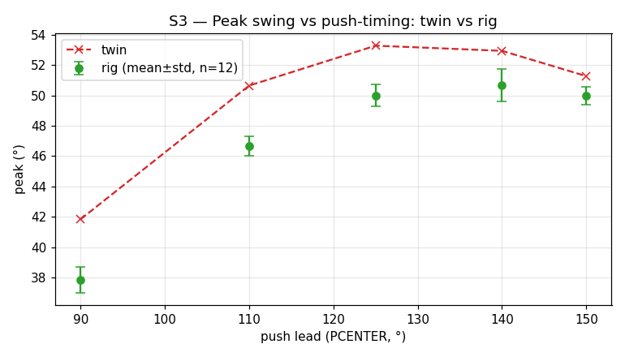

Can classical PID and energy-based control strategies tame a nonlinear physical oscillator that has real sensor noise, actuator latency, friction — and a motor that can only push?
This began in 2019 as a UCO senior-design project, then sat largely untouched until a 2026 redevelopment turned it into something more deliberate: a sim-to-real control platform. Textbook control theory teaches linear, noise-free, friction-free systems. Real ones have sensor noise, actuator deadbands, nonlinear dynamics, and a fundamentally limited actuator. The aeropendulum — a propeller on a ~1 m arm with real-time feedback — is a testbed for what control theory survives contact with reality.
The actuator is the crux. The propeller is push-only: it can shove the arm in one rotational direction but never pull. That single constraint shapes everything — it makes true critical damping impossible, biases every pumped swing, and, as it turned out, sets the ceiling on every capability the rig has.
A sim-to-real control platform
The rig runs as a closed loop between hardware and simulation. The Arduino owns the fast real-time control loop and every safety limit; a Python host wraps it with a slow outer loop — flashing firmware, streaming and logging telemetry, fitting a digital twin, optimizing controllers in simulation, then deploying and validating on the hardware. One validated twin (natural frequency, linear + quadratic aerodynamic drag, the motor's thrust curve and its spin-up lag) reproduces the rig across its full envelope — free-decay ring-down, static hold, and large-amplitude pumping — from a single parameter set. A new control idea can be designed and stress-tested in simulation before it ever touches the motor.
▶ Launch the interactive simulator
the validated twin & every control mode, live in your browser
Three control modes
| Mode | Strategy | Result |
|---|---|---|
| Static hold | Feedforward + rate damping | Holds a steady angle on a near-constant thrust. The robust law is feedforward + damping with no proportional term — proportional gain plus the deadband and actuator lag self-pumps into a limit cycle. |
| Dynamic sweep | Phase-timed energy pump | A push timed to the swing — led ~40° early to beat the motor's spin-up lag — reaches 57°, up from ~35° for the naive method, on the same hardware. Self-starting and amplitude-regulating. |
| Active damping | Energy-armed velocity brake | Arrests a 40° drop in ~5 s — roughly 9× faster than the passive ring-down — buzz-free, hanging at true zero. An instantaneous-energy arm gate stops a push-only brake from latching on near rest. |
The headline finding: timing, not thrust
The swing ceiling was never the motor — it was the timing of the push. The original method maxed near 40°; phasing the same thrust to the favorable half of each swing, fired slightly early to compensate the propeller's spin-up lag, reached 57° with no extra power. It is the kind of result that only shows up when you stop trusting intuition and start measuring: more force was available the whole time and it didn't matter — when the force arrived did.

And the deeper finding: the motor is the wall
Pushed to their limits, all three modes converged on one honest conclusion. The swing ceiling was the motor; so was the settling time and the arrest time. Every headline number is thrust-bound — the controllers sit at or near optimal, and the binding constraint is the push-only motor, not the software. That is a result in itself: the project didn't just build three working modes, it proved where the ceiling lives. The single lever that would raise all three at once is the actuator — a stronger or bidirectional motor — which is a hardware question, not a tuning one.
From testbed to teaching instrument
With the controllers wrung out, the platform's most valuable future turned out to be pedagogical. A validated twin and three clean, legible control laws make the aeropendulum an unusually good demonstrator for two things at once: harmonic oscillators — free simple-harmonic motion, damping regimes, resonance, phase-space portraits, energy exchange — and control systems — feedback regulation, positive-feedback limit cycles, velocity-feedback dissipation, and the story of how one actuator constraint reshapes every strategy.
Two artifacts carry that. The interactive simulator runs the validated twin in the browser with a teaching layer — concept tags, time / phase-space / energy views, a resonance mode, adjustable damping, and a “push-timing” knob that makes timing, not thrust something you feel by hand. And the physical rig became a self-contained classroom demonstrator: its three potentiometers were repurposed from raw gain-tuning into model-bounded behaviour knobs — each pot drives one intuitive parameter, ranged by the digital twin so a student can shape the response without ever destabilising the hardware. The rig and the simulator now expose the same control surface; sweep the push-timing knob on either and the swing peaks at the same lead, within a degree or two. Twin, simulation, and hardware all agree.
Verifying the twin we teach with
A teaching tool that claims a “validated twin” should be able to prove it. The lab itself is a predict → measure → reconcile loop — predict a behaviour in the twin, measure it on the rig, account for every gap. To put a number on the twin's accuracy, the rig ran its full four-station sweep twelve times autonomously and each metric was compared against the twin's prediction.
The verdict is the honest kind. The passive plant is essentially exact — natural period and damping land inside the rig's own run-to-run scatter. The motor model is ~5–8% optimistic: the twin over-predicts the pumped swing by a couple of degrees and the active brake by about a second, all in the same direction — exactly what a slightly-too-strong thrust estimate does. Nothing drifted over the fifty-minute run. A few percent is well inside what teaching and design need, so the twin is banked as validated and the residual is left where it is rather than chased. Merit before polish.

System architecture
Sensing & estimation
- AS5600 magnetic encoder (12-bit) — absolute angle
- MPU6050 IMU gyro — angular velocity
- Circular-mean tare, wrap-safe EMA angle filter
- Bias-correcting complementary velocity estimate
Control
- Static: feedforward + rate damping (no P term)
- Dynamic: phase-timed pump toward an amplitude target
- Damping: energy-armed velocity brake
- Energy-equivalent amplitude gating, anti-windup, slew limit
Digital twin
- ωₙ, linear + quadratic drag, motor curve + lag
- Sim-first controller design; held-out validation
- 12-run study: accurate to a few % (plant exact, motor ~5–8% optimistic)
Platform
- Arduino fast loop + Python slow outer loop
- flash → log → fit → optimize → deploy → validate
- Standalone teaching firmware: model-bounded pot knobs
Project Documents
Related Work
A mathematical treatment of nonlinear dynamics, stability analysis, and phase-space methods applied to physical systems.
Interactive simulation of pendulum dynamics, phase portraits, and bifurcation diagrams including the driven pendulum.